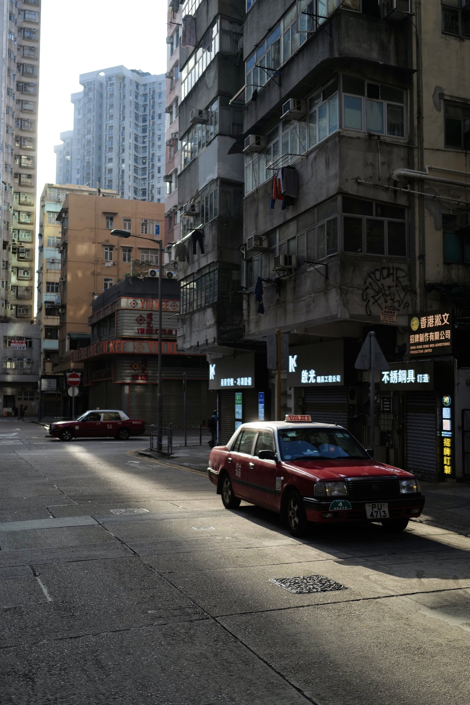
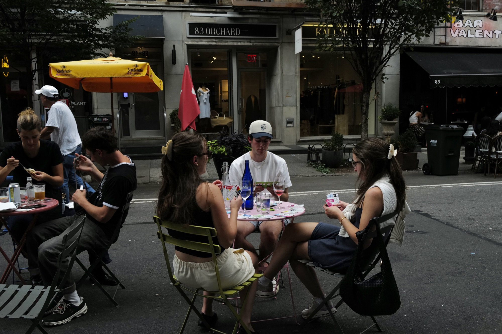
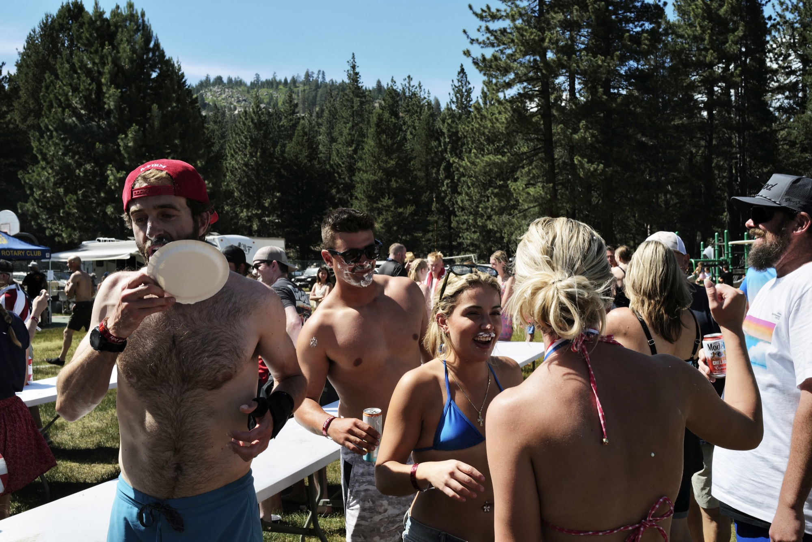
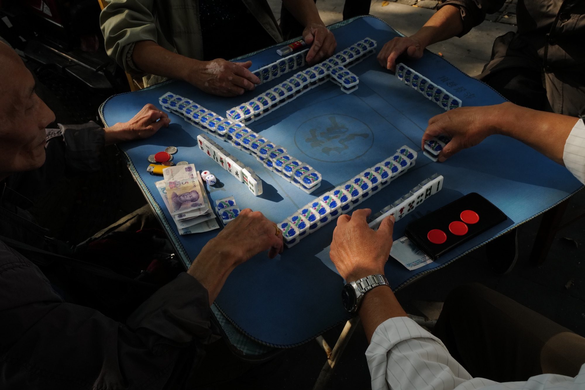
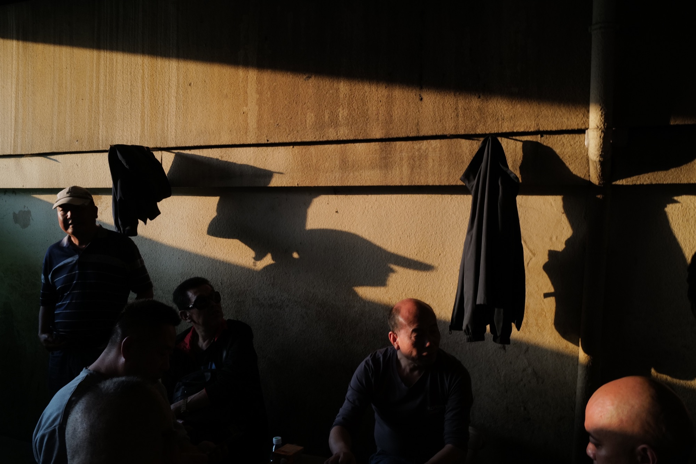
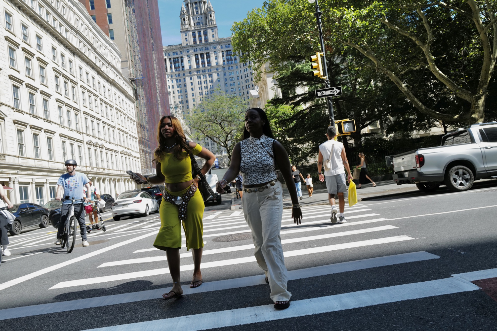
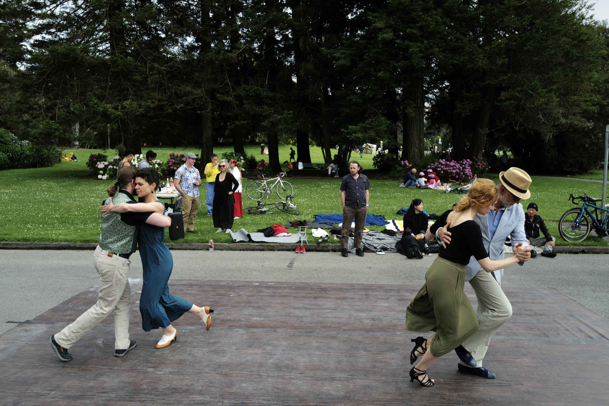
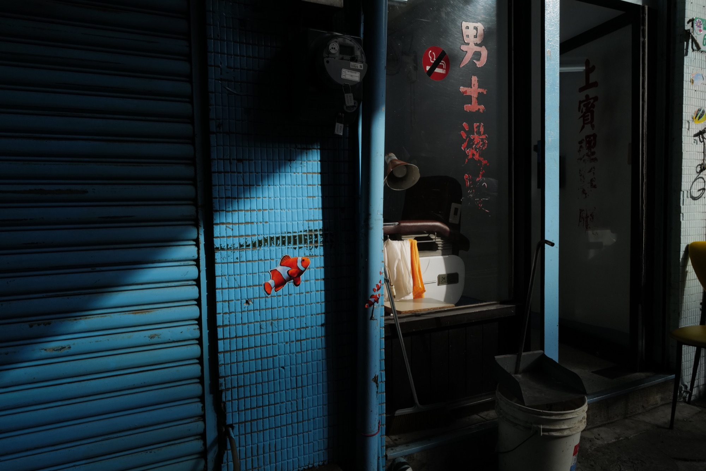
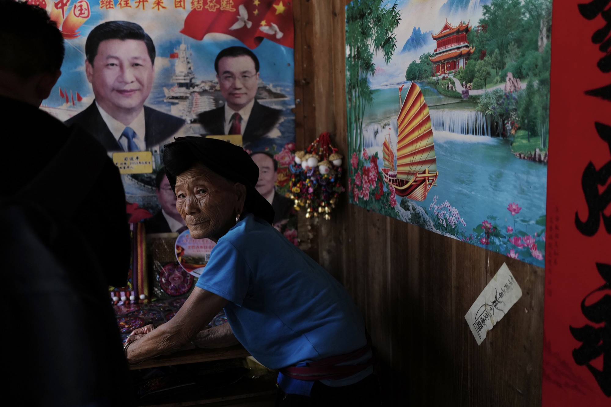
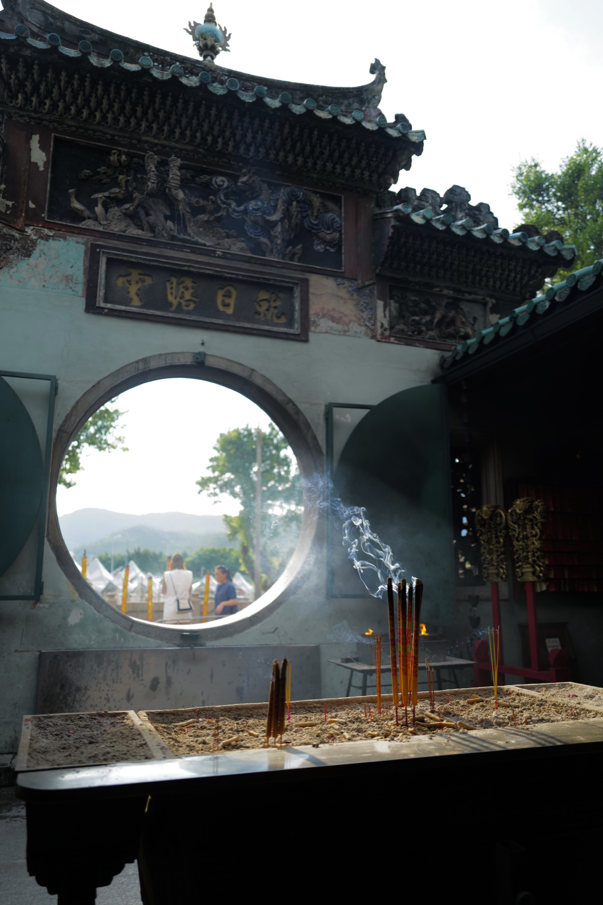

Photos advance automatically every 3 seconds. Use the pause button to stop or resume the slideshow. Swipe or scroll horizontally to explore. Use the previous and next buttons, or the left and right arrow keys. Home returns to the first photograph and End moves to the last.









